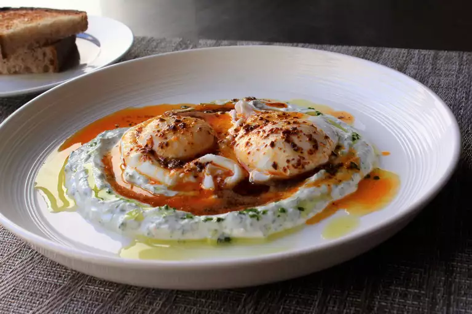

Cilbir

Description
These Turkish eggs were a delicious surprise for me! I feel like I've seen and done it all at my age, so you can only imagine my delight at finding a new way to prepare eggs. I would never have thought to pair yogurt with poached eggs and spicy red pepper butter, but it might be my new favorite breakfast. Serve with toasted crusty bread for dipping.
Ingredients
Yogurt Spread
- 1 cup Turkish or Greek yogurt, at room temperature
- 1 clove garlic
- 1/2 teaspoon freshly ground black pepper
- 1/4 teaspoon salt
- 1 pinch cayenne pepper
- 2.5 tablespoons finely chopped fresh dill
Aleppo Butter
- 1/2 stick unsalted butter
- 1 tablespoon Aleppo chile flakes
- 1/2 teaspoon smoked paprika
- 1/4 teaspoon ground cumin
Poached Eggs
- 1 tablespoon white vinegar
- 4 large eggs
- 1 pinch salt
Steps
- To make yogurt spread: Place yogurt in a medium bowl and grate in garlic; mix to combine. Season with pepper, salt, and cayenne. Add dill and mix thoroughly. Set aside at room temperature.
- To make Aleppo butter: Melt butter in a saucepan over medium heat; heat until bubbles begin to burst. Add chile flakes, paprika, and cumin. Stir until color is uniform. Turn off heat and let spices infuse.
- To make parsley and jalapeño oil: Grind parsley and jalapeño together in a mortar. Drizzle in olive oil and season with salt; stir to combine.
- To make poached eggs: Fill a large saucepan with 2 to 3 inches of water and bring to a boil. Reduce heat to medium-low, add vinegar, and keep water at a gentle simmer. Crack an egg into a small bowl, then gently slip egg into water, holding the bowl just above surface of water. Repeat with remaining eggs. Cook until whites are firm and yolks have thickened but are not hard, 2 1/2 to 3 minutes. Remove with a slotted spoon, pat dry on a kitchen towel, and place onto a warm plate.
- Dollop yogurt mixture onto serving plates. Use the back of a spoon to spread yogurt, carving ridges into the top to catch oil. Drizzle some jalapeño oil. Top with eggs and 1 to 2 spoonfuls of Aleppo butter. Sprinkle sea salt on top.